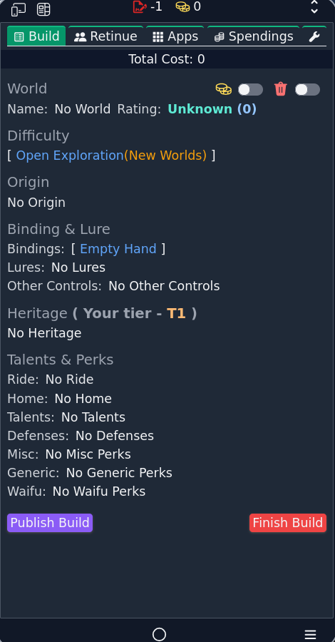

SCP Foundation
Secure, Contain, Protect
The Company

The company is a multi-dimensional earth-texture based organization, run by colation of super natural entites present on earth texture. The company is also known as "███████████".
The primary purpose of the company is unknown but it's method have been observed and documented.
The Company is divided into 5 classes run by different supernatural factions looking for their own benifits.
Class-A: The Devils: This faction is run by hell residents devils. The company was started by these entities according to the Agent-█████████ reson unknown. The agent name can't be recorded due to their information defence. This faction recruits "evil" people or atleast the people who are despised by white heaven. Internal currency is called soul coin, made by refinig human souls. soul coin is used to make credits hence class-A can be considerd royalty faction but it's unclear as Agents themselves appear to be unaware.
Class-B: The Fey: This faction compromises of fey and elves. They recruits entities who can be called "social Manipulators", Their standard way to deal with things is mind wiping, unfair contracts. This faction is responsible for constuction of the Stamp.
Class-C: The Eldritch: This faction compromises of eldritch entites (To be specified that these entities are of earth texture, for example ███████████, ██████████████████████ and"The Great Old Ones"). This is the faction which provides the "power" to the corporation. Responsible for powering the various facilities.
Class-D: The Psychopomps: This faction compromises of deathless beings, such as zombies, living skeletons, lich and so one. They manage internal office and beauracracy due to their timeless nature.
Class-D: The Cultivators: This faction compromises of cultivators(commonly depicted in xianxia fictions), They do the internal policing and maintain law and order among the factions
The company deals with clients, the client refer to any entity who pays to company for their service. The primary product The Company sells are Waifus/Husbandos and Stories. Company recruits compromised humans to work for them and assign the role of Contractor. The Contractor are assigned a soul bound artifact commonly observed to appear as A smartphone. The Agents can use this device to purchase things from company catalog, contact their managers(Help Desk), get their salary which is 10,000$ per month or equivalent in whatever economy they are in, Get loan in credits and Manage their debt.
The companions are generally Canon characters, fictional character(They are not fictional read introduction page to know cosmology) who the Agents have seen on their TV hence waifus. The company uses this obsession towards these "fictional" characters to attract the Agents.
The Agents are inserted into the invaded world through various ways such as reincarnation, transmigration or plain teleportation.
Making contact with The Company render any entity uneligible for entry in "The White Heaven".
The process of making The Stamp have been reverse engineered, you can find it in ███████████████████████████████████████████████████████.
Upon mention of location of The Method the previous author died. We will henceforth be refering to that as The Method.
The journey of the Agents is also broadcasted to clients and the clients can commision scenarios or sponsorships for the Agent. One particular method to do that is using Misson board, where client posts missions for a particular reward in credits.
The Agents themselves are reproduced clones of the original contractor, hence they too can be considered slave. It's a slavery pyramid.
The Clones are of all the entities are produced according to demand in the market. The sample degenrate after enough cloning due to some limit of their cloning device which can't produce more than a certain amount of a particular quantum signature hence need of new sample of same entity.
The clones are cyro freezed according to one Agent who had explored their facility
Rogue agents loses all their defence and access to the stamp. They keep all the abilities they had purchased or species change the made.
It's evil made corporation.
The Agents can purchase the mind controlled companions, they can be fresh, potential realised or used by other agents.
A companion upon death of agent is branded as used and sold for reuse.
A companion retains all their mental facility just feels enormous amounts of love towards their "Master" hence can never oppose them or harm them. Change of ownership changes the Master.
Underperforming line of agents are disposed and not cloned.
(more observations to be written)